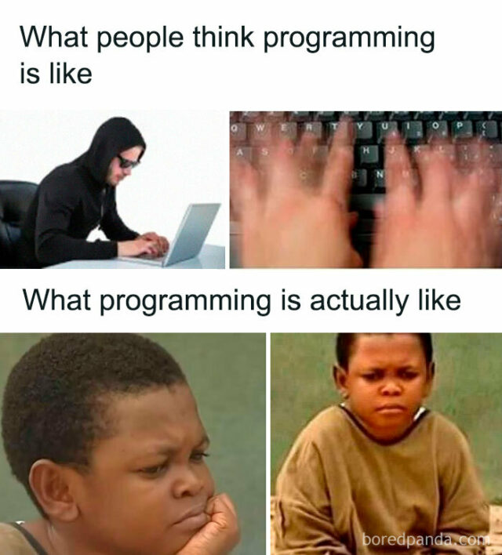

Element Showcase
The engine processes a specific set of JSON objects. Each type maps to a semantic HTML structure designed for technical documentation.
Typography & Headings
#Standard paragraphs use type: 'text'. Headings use type: 'title'. Titles are 'smart'—their size scales based on how many blocks deep they are buried.
Callouts & Notes
#Notes are used to highlight specific information. They support different variants via the variant key.
Formatting Notes
#The content inside notes can be formatted with the same JSON structure as regular pages. This allows you to include lists, code blocks, and even tables inside notes for maximum clarity.
prefer inline <code>…</code> for short labels. For multi-line code use a separate pre block outside the note, or include a small pre inside the note — the renderer supports it but keep tables and large blocks outside notes for best layout. Avoid raw block-level HTML inside notes unless necessary.
Examples (copyable)
Use inline code for short labels:
<code>npm install</code>.const greet = (name) => `Hello ${name}`;
console.log(greet('World'));| Flag | Behavior |
|---|---|
--prod | Enable production optimizations |
--watch | Rebuild on file changes |
keep full examples outside notes for better layout. Example JSON snippet to reference a code block:
{
"type": "code",
"name": "example_snippet"
}
Lists
#Lists support both unordered (bullet) and ordered (numbered) formats.
- Bullet item one
- Bullet item two
- First steps
- Second steps
Code Comparison Grid
#The code type is the heart of the Atlas. It looks for files in content/snippets/ that match the provided name.
#include <iostream>
#include <string>
class Config {
public:
static Config& instance() {
static Config config;
return config;
}
void setEnv(std::string value) {
env_ = std::move(value);
}
const std::string& env() const {
return env_;
}
private:
Config() = default;
std::string env_ = "dev";
};
int main() {
Config::instance().setEnv("prod");
std::cout << Config::instance().env() << '/n';
}package main
import (
"fmt"
"sync"
)
type Config struct {
Env string
}
var (
once sync.Once
shared *Config
)
func Instance() *Config {
once.Do(func() {
shared = &Config{Env: "dev"}
})
return shared
}
func main() {
Instance().Env = "prod"
fmt.Println(Instance().Env)
}
class Config:
_instance: "Config | None" = None
def __new__(cls) -> "Config":
if cls._instance is None:
cls._instance = super().__new__(cls)
cls._instance.env = "dev"
return cls._instance
Config().env = "prod"
print(Config().env)// Singleton
object Config {
private var env: String = "dev"
def getEnv(): String = env
def setEnv(e: String): Unit = {
env = e
}
}
object Main extends App {
println(Config.getEnv())
Config.setEnv("prod")
println(Config.getEnv())
}
// Singleton
object Config:
private var env: String = "dev"
def getEnv(): String = env
def setEnv(e: String): Unit =
env = e
@main def main(): Unit =
println(Config.getEnv())
Config.setEnv("prod")
println(Config.getEnv())
class Config {
private static shared: Config | null = null;
private constructor(public env: string) {}
static instance(): Config {
if (!Config.shared) {
Config.shared = new Config('dev');
}
return Config.shared;
}
}
Config.instance().env = 'prod';
console.log(Config.instance().env);Images
#Images use the image type and support captions.
